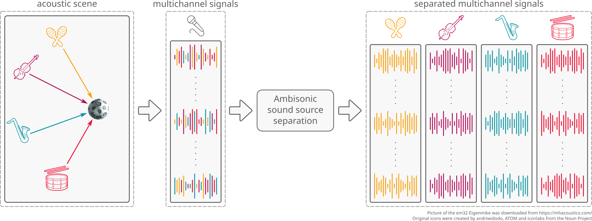
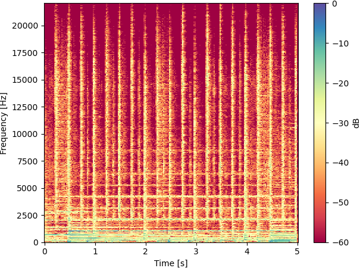
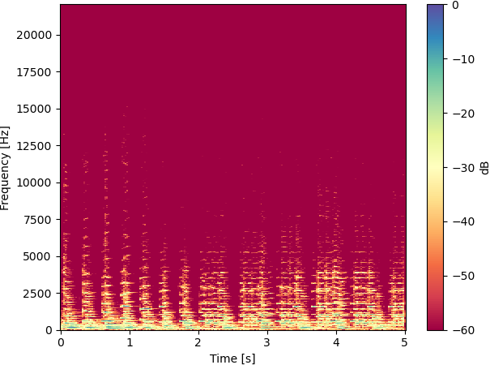
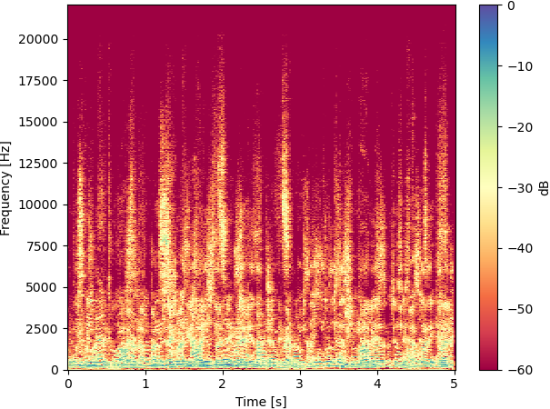

Sound source separation
In this work, we target the challenging task of Ambisonic-to-Ambisonic reverberant sound source separation, as depicted in Figure 2. The aim is to estimate individual reverberant source signals, as if no other sound sources were present during the recording.

Binaural audio samples
We present the audio samples of input mixtures and source signals estimated with the baseline [1] and one of the five proposed algorithms [2], namely the EU-WLP. The presented audio samples include one audio file per one of the three datasets considered in our paper [2], namely the MUSIC I, MUSIC II and SPEECH. In here we focus on the under-determined scenario, in which we retrieve source signals of 6 sound sources using first-order Ambisonics with 4 microphone signals, while more results for the over-determined and the determined cases can be found in our paper [2].
Table 1 contains the audio samples of input mixtures for the exemplary files, while Tables 2 - 4 contain the source signals separated with the baseline [1] and the EU-WLP [2], in case of the MUSIC I, MUSIC II and SPEECH datasets, respectively.
All audio samples were decoded from the Ambisonic to the binaural format with the magLS method [3], using the spaudiopy library - please use headphones for best experience.
Note, that the estimated source signals were assigned to their target counterparts by considering the best overall Signal-to-Distortion-Ratio. Combined with the reoccurring inability of the baseline algorithm to properly separate source signals, this can produce somewhat unintuitive estimate-to-source mapping, especially when considering only an isolated audio example, as is the case for example in Table 2, row 1.
Table 1. Input mixtures for the exemplary audio files.
| MUSIC I | MUSIC II | SPEECH | |
|---|---|---|---|
|
 |
 |
 |
Table 2. Separated source signals for the exemplary file from MUSIC I dataset.
Table 4. Separated source signals for the exemplary file from SPEECH dataset.
References
[1] J. Nikunen and A. Politis, “Multichannel NMF for source separation with ambisonic signals”, 2018 16th International Workshop on Acoustic Signal Enhancement (IWAENC), Tokyo, Japan, 2018, pp. 251-255, doi: 10.1109/IWAENC.2018.8521344.
[2] M. Guzik and K. Kowalczyk, “On Ambisonic Source Separation with Spatially Informed Non-negative Tensor Factorization”, to be added after publication
[3] C. Hold and N. Meyer-Kahlen and V. Pulkki, “Magnitude-Least-Squares Binaural Ambisonic Rendering with Phase Continuation”, Jahrestagung für Akustik 2023 Mar 31.